Visualisation with ggetho
Aims
In this practical chapter, we will generate toy data to learn how to:
- Express a question as a relationship beween variables
- Use tile plots to show individual data
- Make population plots
- Wrap data around circadian time
- Make double-plotted actograms
- Annotate plot with light and dark phases
- Use ggplot tools (facets, scales) to enhance plots
- Plot average and individual periodograms
Prerequisites
library(devtools)
install_github("rethmics/behavr")
install_github("rethmics/ggetho")Lessons from ggplot
In the previous tutorials, we have used ggetho to visualise out behavioural data. This section will explain further how this package can be used to produce flexible plots and how it integrates with ggplot2.
ggplot2 is one of the most popular visualisation tools and an unavoidable R package. It implements the powerful concepts of the “Grammar of graphics”. The package ggetho, which we discuss here, extends ggplot for the specific case of behavioural analysis. At this stage, you really want to have some familiarity with ggplot2 so you understand its logic. You will find a fair numbers of videos and books online.
Some behavioural data
In this section, we will simulate toy behavioural data. For that, we start by making some arbitrary metadata. Here, we have 40 animals, condition “A” vs “B”, and sex, male (“M”) or female (“F”).
library(ggetho)
metadata <- data.table(id=sprintf("toy_experiment|%02d" , 1:40), region_id=1:40,
condition=c("A","B"),
sex=c("M","M", "F", "F"))
head(metadata)## id region_id condition sex
## 1: toy_experiment|01 1 A M
## 2: toy_experiment|02 2 B M
## 3: toy_experiment|03 3 A F
## 4: toy_experiment|04 4 B F
## 5: toy_experiment|05 5 A M
## 6: toy_experiment|06 6 B Mdt <- toy_activity_data(metadata, seed=107)Now, we have a behavr object, dt:
summary(dt)## behavr table with:
## 40 individuals
## 3 metavariables
## 3 variables
## 1.72804e+06 measurements
## 1 key (id)This data is stored in a behavr table. It has a column moving that that tells us whether an the animal id is moving at a time t.
The ggetho() function
ggetho() is the core function. It expresses the relationship between variables. In this respect, it works very much like ggplot(), but it also pre-processes the data.
It is important to understand the difference between ggplot() and ggetho(). ggplot() works with data frames (or data tables), and does not preprocess the data. ggetho() is only a layer on top of ggplot(). It works exclusively with behavr tables and does preprocess data before calling ggplot(). ggetho() does return ggplot a object, therefore, layers available in ggplot2 can be used natively on top of ggetho.
Let’s work with an example. Say, we would like:
- The proportion of time spent moving, on the y axis
- Versus time, on the x axis
We could write:
pl <- ggetho(dt, aes(x=t, y=moving))
plThis generates an empty plot this is normal because we have, so far, no layer. We will see some layers very soon!
The role of ggetho is to express a relationship between variables and to compute a summary, over a certain time window, of a variable of interest for each individual.
Importantly, you decide which variable you want to plot. For instance, you could be interested in things like the number (sum) of beam crosses or the average position.
Tile plots
Per individual
One of the most interesting layers is stat_tile_etho. It shows the variable of interest in the (colour) z axis. The y axis is discrete (generally the id), that is one row per individual. The x axis is time (by default, summerised, by ggetho, over 30 minutes). So, if we want to show the proportion of time spent moving over time for each individual (id):
pl <- ggetho(dt, aes(x=t, y=id, z=moving)) + stat_tile_etho()
plBy defaut, each pixel is the mean (summary_FUN = mean, in ggetho), over 30 min (summary_time_window = mins(30), in ggetho()). Also, note that the default is x=t and y=id, so we could just obtain exactly the same with ggetho(dt, aes(z=moving)) + stat_tile_etho().
Sorted individual
Sometimes, we want to sort individuals based on a metavariable (discrete or continuous). For instance let us compute the overall average fraction of time spent moving, add it to the metadata, to then sort individuals from low to high movers:
First, we add a new metavariable (mean_moving):
# the average time spent moving per 1000 (rounded)
mean_mov_dt <- dt[, .(mean_moving = round(mean(moving) * 1000)), by=id]
# join curent meta and the summary table
new_meta <- dt[mean_mov_dt, meta=T]
# set new metadata
setmeta(dt, new_meta)
head(dt[meta=T])## id region_id condition sex mean_moving
## 1: toy_experiment|01 1 A M 138
## 2: toy_experiment|02 2 B M 195
## 3: toy_experiment|03 3 A F 90
## 4: toy_experiment|04 4 B F 118
## 5: toy_experiment|05 5 A M 123
## 6: toy_experiment|06 6 B M 203Proportion of time moving (mean(moving)) will be a number between zero and one, with sometimes many decimals, which makes it hard to read. A more intuitive way to express it is as a rounded per mille (‰). I prefer it to per cent as we have more resolution (i.e. less ties) For instance, 0.0113333 would be expressed as 11.
Now, we can express a new relationship where we show the interaction between our custom variable and id, on the y axis:
pl <- ggetho(dt, aes(x=t, y=interaction(id, mean_moving, sep = " : "), z=moving)) +
stat_tile_etho()
pl
Since we use " : " as a separator, we have, on the y axis, names as <id> : <mean_sleep>. You can extend this concept to sort also by males vs females:
pl <- ggetho(dt, aes(x=t, y=interaction(id, mean_moving, sex, sep = " : "), z=moving)) +
stat_tile_etho()
plGroup averages
Sometimes, we also want to aggregate individuals per group. For instance, males average vs females average. This can be done by changing the y axis. Previously, we used id, which made one row per individual. Instead, if we use a grouping variable like sex, we will plot one row per value of sex (i.e. two rows, one for males, one for females). In other words, we replace id by sex on the y axis:
pl <- ggetho(dt, aes(x=t, y=sex, z=moving)) + stat_tile_etho()
pl In this context, every row is not an individual any more, but a population. The
In this context, every row is not an individual any more, but a population. The method argument of stat_tile_etho() allows you to use other aggregates (median, max, min, …).
Bar tiles
The bar_tile is a variant of our tile plot. Instead of colour intensity, it shows our z variable by the height of the tiles. You can use it just by replacing stat_tile_etho by stat_bar_tile_etho:
pl <- ggetho(dt, aes(x=t, z=moving)) + stat_bar_tile_etho()
plPopulation plots
One population
The problem with representing a variable on a colour axis is that it is not perceptually comparable, and we cannot make error bars. When the number of groups is not too high, it makes sense to show the variable of interest on the y axis, and then draw lines between consecutive points. For this, we can use the stat_pop_etho() function:
pl <- ggetho(dt, aes(x=t, y=moving)) + stat_pop_etho()
pl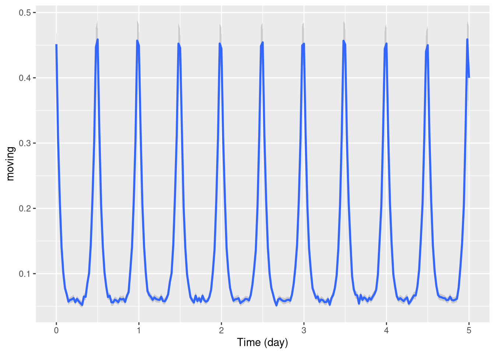
By defaut, the local average and error bars are computed from the mean as standard errors (method = mean_se). You can compute other types of error bars e.g. bootstrap (method = mean_cl_boot).
Several populations
Often, we want to compare population with respect to a variable. There are different ways to split populations. We can, for instance, use a different colour line for different groups:
pl <- ggetho(dt, aes(x=t, y=moving, colour=sex)) + stat_pop_etho()
pl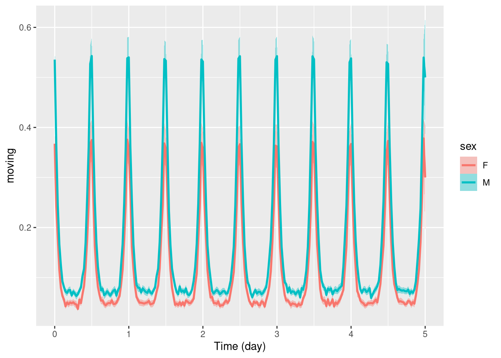
Another way, is to use ggplot’s faceting system:
pl <- ggetho(dt, aes(x=t, y=moving)) + stat_pop_etho() +
facet_grid(sex ~ .)
plOf course, you can combine both when you have more than one relevant metavariable:
pl <- ggetho(dt, aes(x=t, y=moving, colour = sex)) +
stat_pop_etho() +
facet_grid( condition ~ .)
pl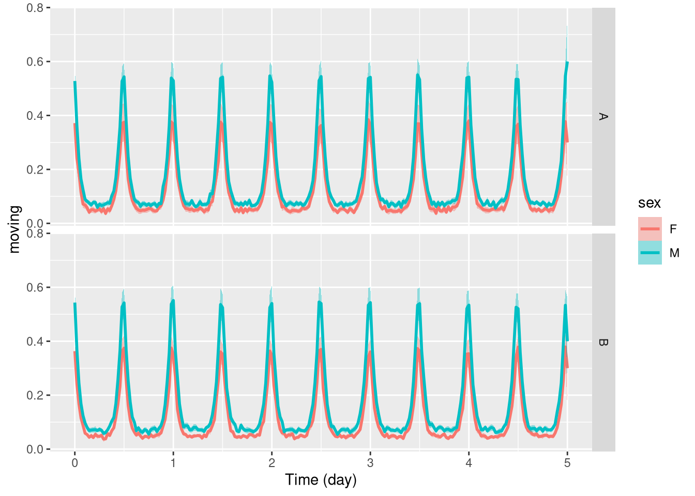
Wrapping data
When behaviours are periodic, we sometimes want to average our variable at the same time over consecutive days. In ggetho, we call that time wrapping. It can be done simply with the time_wrap argument. It will work the same for population or tile plots:
pl <- ggetho(dt, aes(x=t, y=moving), time_wrap = hours(24)) + stat_pop_etho()
pl
Note that you do not have to wrap specifically over 24h, you could work over different periods.
If you are interested in events that happen between the end and the start of the wrapping period (e.g. at ZT24). You may want to wrap time with an “offset”. That is a phase shift. For instance, if we want to have ZT06 in the middle of our graph, we use an offset of +6h:
pl <- ggetho(dt, aes(x=t, y=moving),
time_wrap = hours(24),
time_offset = hours(6)) + stat_pop_etho()
pl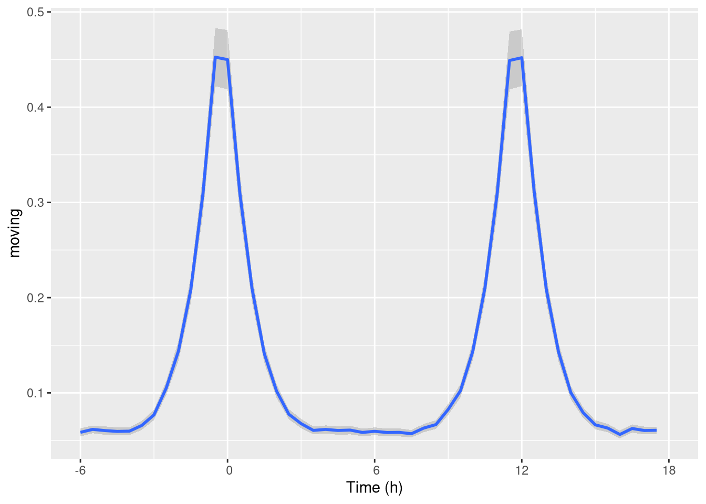
As you can see, it gives us a nice visualisation of the “activity peaks”.
Double-plotted actograms
When analysing periodic behaviour, it makes sense to use a so called double-plotted actogram. This is very useful to understand periodicity of behaviours.
This means data is plotted twice, in a staggered manner:
row1 [day 1, day2]
row1 [day 2, day3]
row1 [day 3, day4]To do that, we can set the multiplot argument of ggetho to 2 (3 would do a “tripple-plotted” actogram). This averages the whole population:
pl <- ggetho(dt, aes(x=t, z=moving), multiplot = 2) + stat_bar_tile_etho()
pl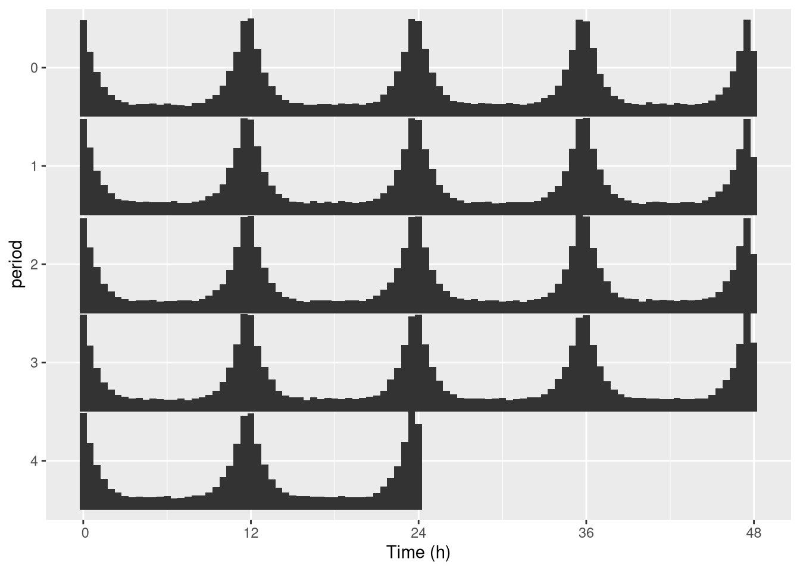
In practice, we genrally want to do that for one specific individual (see next section to do that automatically):
pl <- ggetho(dt[id=="toy_experiment|01"],
aes(x=t, z=moving), multiplot = 2) + stat_bar_tile_etho()
plOne thing you can do is change the length of the period. For instance 25h instead of 24h:
pl <- ggetho(dt[id=="toy_experiment|01"], aes(x=t, z=moving),
multiplot = 2,
multiplot_period = hours(25) # this is the important part
) +
stat_bar_tile_etho()
plKeep in mind that you can use the tile representation if you prefer it:
pl <- ggetho(dt[id=="toy_experiment|01"], aes(x=t, z=moving),
multiplot = 2
) +
stat_tile_etho() # tile here
plFaceting by ID
When multiplotting, it is difficult to represent individuals (since both y and x axis are used).
Default
The best way to systematically represent all of them is to use facetting, which is a ggplot feature. Since id represents unique individuals, each facet (sub-rectangle) is one individual:
pl <- ggetho(dt, aes(x=t, z=moving),
multiplot = 2
) +
stat_bar_tile_etho() +
facet_wrap( ~ id)
plCustom labeller
Sometimes, the id variable will be very long, you can use the id_labeller to make things clearer:
pl <- ggetho(dt, aes(x=t, z=moving),
multiplot = 2
) +
stat_bar_tile_etho() +
facet_wrap( ~ id, labeller = "id_labeller")
pl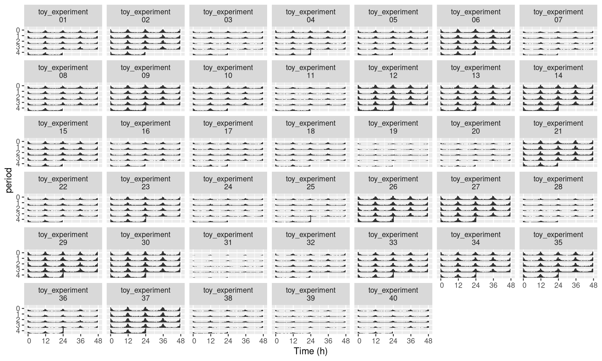
Numerical labelling
Even with the trick above, ids may become unreadable when plotting many individuals. What we can can do in this case is to use numbers instead. First, we create a new metavariable named, for instance, uid. It will be one unique number per individual:
dt[, uid := 1:.N, meta=T]
print(dt[meta=T])## id region_id condition sex mean_moving uid
## 1: toy_experiment|01 1 A M 138 1
## 2: toy_experiment|02 2 B M 195 2
## 3: toy_experiment|03 3 A F 90 3
## 4: toy_experiment|04 4 B F 118 4
## 5: toy_experiment|05 5 A M 123 5
## ---
## 36: toy_experiment|36 36 B F 105 36
## 37: toy_experiment|37 37 A M 228 37
## 38: toy_experiment|38 38 B M 78 38
## 39: toy_experiment|39 39 A F 59 39
## 40: toy_experiment|40 40 B F 84 40Then, we can use uid instead of id:
pl <- ggetho(dt, aes(x=t, z=moving),
multiplot = 2
) +
stat_bar_tile_etho() +
facet_wrap( ~ uid)
pl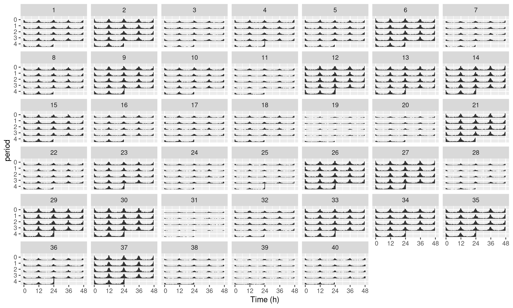
Since we kept both id and uid in the metadata, we can map them again each other.
The downside of using numbers, is that they are ambiguous. Say, you decide to start with more data, or to remove some, then the numbers (uid) will not match their previous id. Conversely, if you try to analyse different datasets independently, and merge results afterwards, you will end up with duplicates in uid. Therefore, only use this trick for readability and visualisation.
If you want to understand facets a bit more, have a look at this tutorial.
LD annotations
Basics
In circadian experiments, we often like to add annotations (black and white boxes) to show Dark and Light phases. We have another layer for that:
pl <- ggetho(dt, aes(x=t, y=moving)) + stat_pop_etho() + stat_ld_annotations()
plChanging LD colours
Sometimes you want different colours to explain, for instance, that days are “subjective”(grey).
pl <- ggetho(dt, aes(x=t, y=moving)) + stat_pop_etho() +
stat_ld_annotations(ld_colours = c("grey", "black"))
plLD in the background
To put the annotation in the background, we can invert the order of the layers, set the height of the annotation to 1 (100%) and add some transparency (alpha = 0.3). We also remove the outline of the boxes:
pl <- ggetho(dt, aes(x=t, y=moving)) +
stat_ld_annotations(height=1, alpha=0.3, outline = NA) +
stat_pop_etho()
pl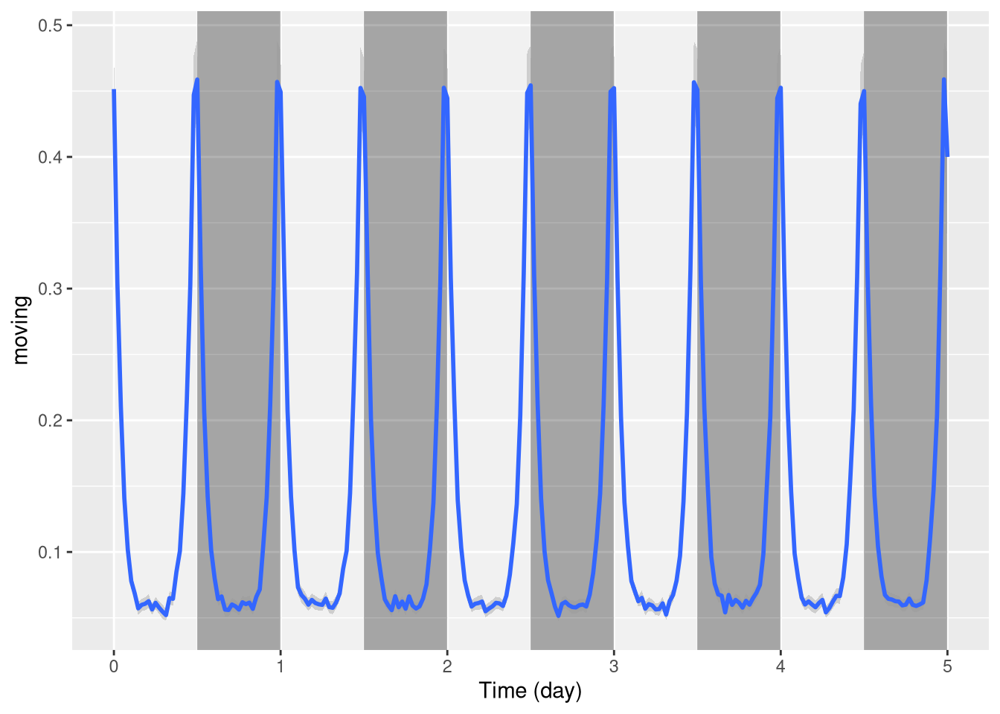
Phase and period
Sometimes you want to show annotations with different phases and periods. For instance, here, we shift the LD annotations 1h forward:
pl <- ggetho(dt, aes(x=t, y=moving)) +
stat_ld_annotations(phase = hours(1)) +
stat_pop_etho()
plOne can also plot over a period different from 24h, say 20h days:
pl <- ggetho(dt, aes(x=t, y=moving)) +
stat_ld_annotations(period = hours(20)) +
stat_pop_etho()
plRegime change
When, you want to indicate a change in regime, say from LD to DD. A simple way is to use multiple layers with explicit start and end points:
pl <- ggetho(dt, aes(x=t, y=moving)) +
# the default annotation layer
stat_ld_annotations() +
# on top of it, a second layer that
# starts at day 2 thoughout day 5,
# and where L colour is grey
stat_ld_annotations(x_limits = days(c(2,5)),
ld_colours = c("grey", "black" )) +
stat_pop_etho()
pl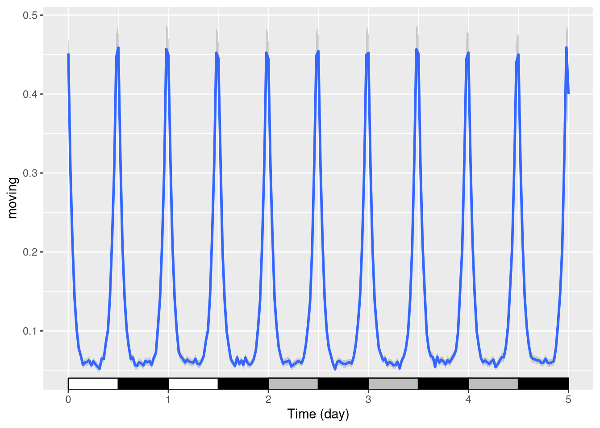
Coordinate and scales
Plot limits
As ggetho creates regular ggplot objects, which we can extend. For instance, we can change the scales. For instance, put the y scale as a percentage between 0 and 100:
pl <- ggetho(dt, aes(x=t, y=moving)) + stat_pop_etho() +
stat_ld_annotations()
pl <- pl + scale_y_continuous(limits = c(0,1),
labels = scales::percent)
pl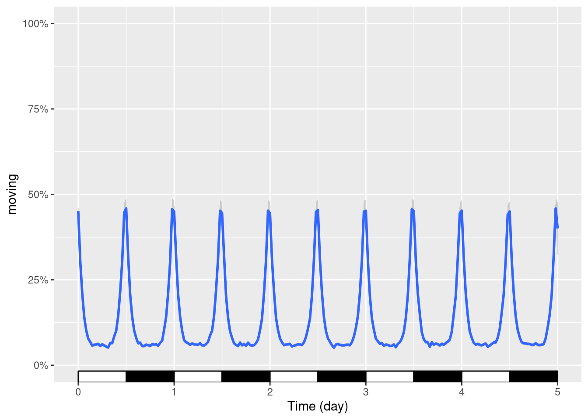
We can also use the same principle to zoom in a finished plot. E.g. between day one and day two:
pl + coord_cartesian(xlim=c(days(1), days(2)))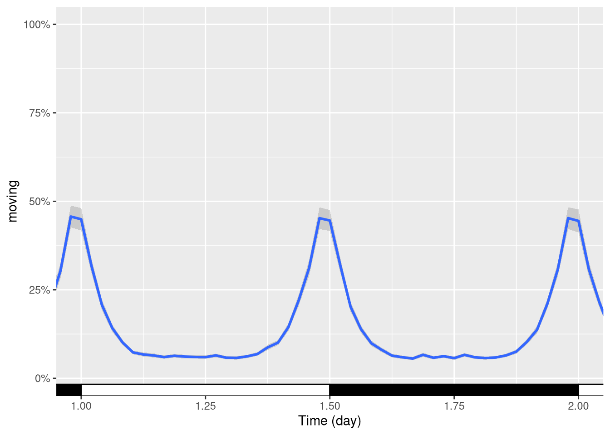
Time scale units
By default, ggetho decides the unit of the time axis according to the range of the data. Sometimes you want to override this behaviour to force time to be in a specific unit (here hours). Using the plot above, we can add a scale:
pl + ggetho::scale_x_hours()## Scale for 'x' is already present. Adding another scale for 'x', which
## will replace the existing scale.R actually warns you since you are replacing the scale. This is fine (as it is precisely what we wanted)!
Coordinate systems
Sometimes, it makes sense to use polar coordinates to show data around the clock:
pl <- ggetho(dt, aes(x=t, y=moving, colour=sex), time_wrap = days(1)) +
stat_ld_annotations(height=.5,
alpha=.2,
x_limits = c(0, days(1)),
outline = NA) +
stat_pop_etho(geom = "polygon", fill=NA)## Warning: Ignoring unknown parameters: sepl + coord_polar()Periodograms
To draw periodogram, we can use our special fucntion ggperio.
The library zeitgebr generates periodogram as behavr tables. with columns for power, period …
library(zeitgebr)
dt[, t := ifelse(xmv(condition) == "A", t, t * 1.01)]
per_dt <- periodogram(moving, dt, FUN = chi_sq_periodogram, resample_rate = 1/mins(5))
per_dt##
## ==== METADATA ====
##
## id region_id condition sex mean_moving uid
## <char> <int> <char> <char> <num> <int>
## 1: toy_experiment|01 1 A M 138 1
## 2: toy_experiment|02 2 B M 195 2
## 3: toy_experiment|03 3 A F 90 3
## 4: toy_experiment|04 4 B F 118 4
## 5: toy_experiment|05 5 A M 123 5
## ---
## 36: toy_experiment|36 36 B F 105 36
## 37: toy_experiment|37 37 A M 228 37
## 38: toy_experiment|38 38 B M 78 38
## 39: toy_experiment|39 39 A F 59 39
## 40: toy_experiment|40 40 B F 84 40
##
## ====== DATA ======
##
## id period power signif_threshold p_value
## <char> <num> <num> <num> <num>
## 1: toy_experiment|01 57600 168.16799 276.4734 0.8917869
## 2: toy_experiment|01 57960 148.22949 277.6686 0.9928340
## 3: toy_experiment|01 58320 115.98897 278.8632 0.9999982
## 4: toy_experiment|01 58680 62.87222 281.2511 1.0000000
## 5: toy_experiment|01 59040 49.50442 282.4443 1.0000000
## ---
## 6436: toy_experiment|40 113760 202.30651 493.8790 1.0000000
## 6437: toy_experiment|40 114120 205.99758 495.0181 1.0000000
## 6438: toy_experiment|40 114480 226.58389 497.2958 1.0000000
## 6439: toy_experiment|40 114840 246.68587 498.4344 1.0000000
## 6440: toy_experiment|40 115200 250.34679 499.5728 1.0000000An average periodogram:
ggperio(per_dt, aes(period, power, colour=condition)) +
stat_pop_etho()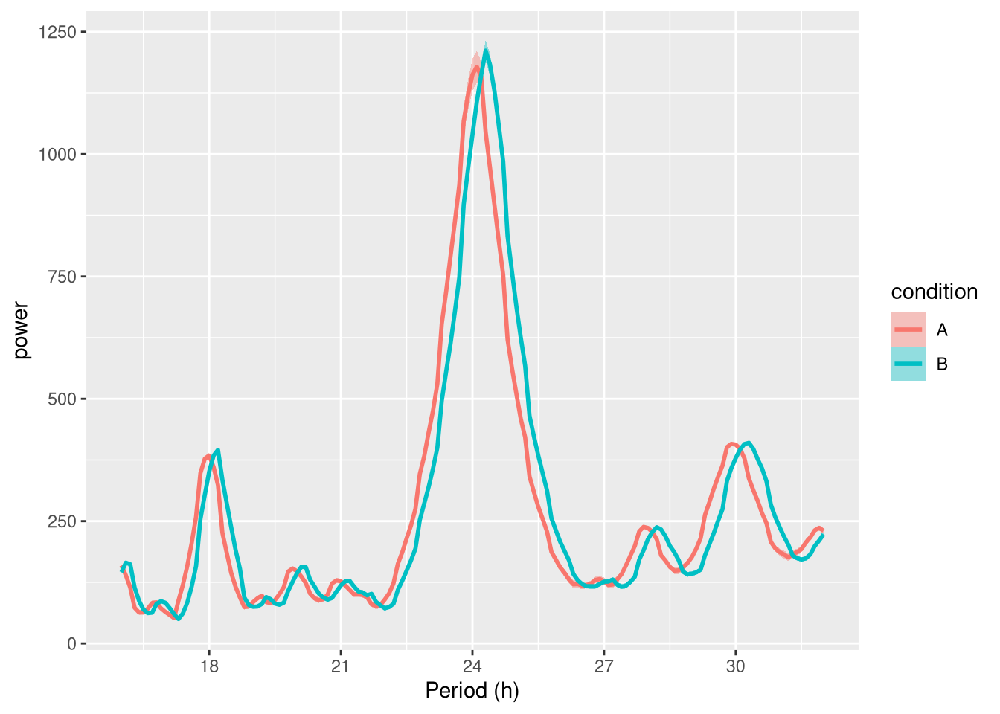
Faceted by uid:
ggperio(per_dt, aes(period, power, colour=condition)) +
geom_line() + facet_wrap( ~ uid)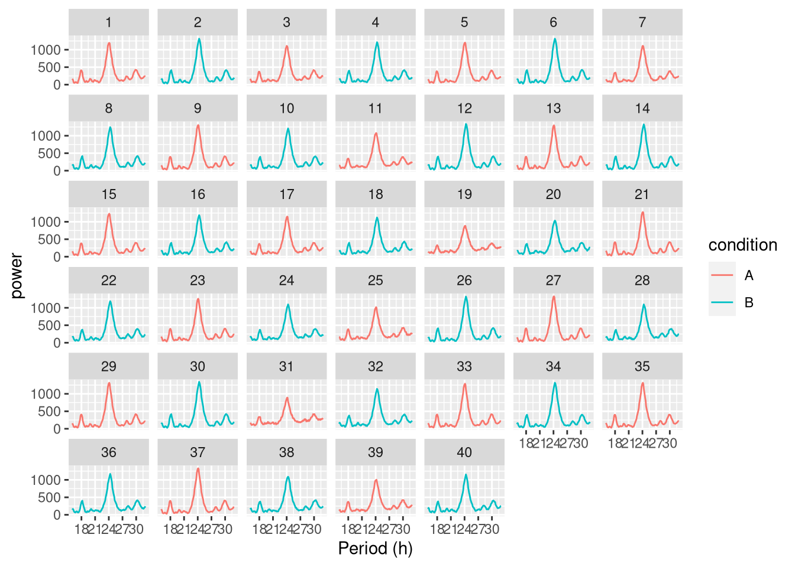
Showing peaks:
per_dt <-find_peaks(per_dt)
ggperio(per_dt, aes(period, power, colour=condition)) +
geom_line() +
geom_peak(colour="blue") +
facet_wrap( ~ uid) 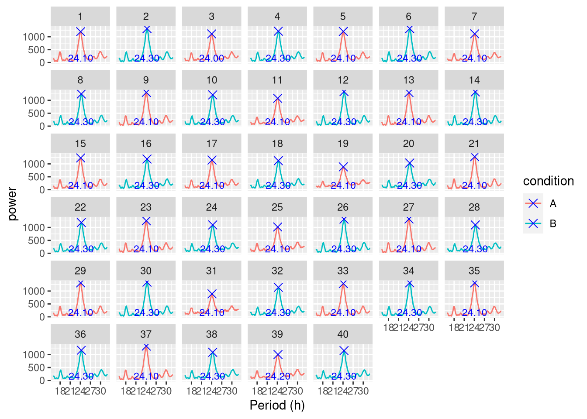
Spectrograms
A “spectrogram” is a visualistion of the variation in the period spectrum over time. The function spectrogram() in the zeitgebr library can generate a spectrogram for each individual in a behavr table, and return the result as a new behavr table with columns for power, period and time. ggetho makes it possible to visualise spectrograms as a heatmap, annotate them, aggregate them by condition.
Whilst periodogram represents the average periodicity of a signal over the entiere time series, sometimes, period itself changes over the course of an experiment. Let’s create a dummy dataset where the period one of the groups increases after 5 days:
metadata <- data.table(id=sprintf("toy_experiment|%02d" , 1:10), region_id=1:10,
condition=c("A","B"),
sex=c("M","M", "F", "F"))## Warning in data.table(id = sprintf("toy_experiment|%02d", 1:10), region_id
## = 1:10, : Item 4 is of size 4 but maximum size is 10 (recycled leaving
## remainder of 2 items)dt <- toy_activity_data(metadata, seed=107, duration = days(10))
# to emulate a time ticking 1.2 times slower after day 5 for group A only
dt[, t := ifelse(xmv(condition) == "A"& t > days(5), 1.2 * ( t - days(5)) + days(5), t)]
# the average activity over time
ggetho(dt, aes(y=moving, colour=condition)) + stat_pop_etho()In this simple case, a periodogram would report poorly the overall behaviour of group A and give no information about the time of the change. On the other hand, with a spectrogram, we should clearly see when the shift of period happens. This spectrograms resulting from spectrogram() can be vusualised with our function, ggspectro():
spect_dt <- spectrogram(moving,
dt,
period_range = c(hours(6), hours(28)))
ggspectro(spect_dt) +
stat_tile_etho() +
scale_y_hours(name= "Period", log=T) + # log axis for period
facet_wrap(~ condition) +
stat_ld_annotations()We see that at day 5, group A, but not group B, shifts its period from 12 h to approximatly 15 h. Note that, in this example, we facet by condition, but we could also facet by id or, instead, average all individuals in one graph. An intesresting feature of such periodograms is that the phase information is discarded. In other word, we can average the periodograms of multiple individuals (e.g. two populations) even if they are out of phase (e.g. if they are free running). This represents a clear advantage over double-plotted actograms, which are often only relevant on single individual.
Perdiodograms can also be wrapped in one day, for instance to study the modulations of period of an ultradian rhythm along the day (see ?ggspectro).
Take home message
ggetho provides you with a new set of stats, layers and scales to represent behaviours. In particular, ggetho and ggperio can be used to preprocess behavr tables in order to use a regular ggplot2 workflow.